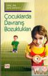

- En önemli javascript kütüphanelerinden jQuery'nin yeni sürümü çıkmış. Yeni sürümde iki önemli yenilik var. Yeni Seçici araçları ve önceki sürüme göre daha hızlı olması. Link
- Günlük yazarlarına sitelerinin arama motorlarında daha iyi sonuç vermesi için ipuçları. Link
- Google'un RSS okuyucu Google Reader için 50 adet Firefox eklentisi. Link ...
24 Ağustos 2007 Web'den Seçme Haberler
- .Net'de trace sonuçlarını anlamak ile ilgili bir makale. Link
- Microsoft yeni hoş görünümlü silverlight destekli arama motorunun betasını açtı. tafita.com Link
- Sadece CSS ile lightbox yapımını anlatan bir makale. Link
- Tüm IE versiyonları için düzeltme(hack) kodu. Link
- Resim gösterimine farklı bir mantık getiren SiggRaph2007 izleminizi tavsiye ederim ...
Tablo kolon genişliğini css ile ayarlama
Tablolarda bazen içeriğe göre tablonun genişlemesini istemeyiz veya içeriği aşağı kaymasını engellemek isteriz. İşte çözüm hemde Gmail'den.
Google bize web hakkında örnekleri ile de yardım ediyor. Gmail'de tablo genişliğini sabitlemenin daha doğrusu metinin tablo genişliğine göre overflow:hiden uygulamasını gösteren güzel bir yöntem
devamını oku.grid { table-layout: fixed; } .grid * td ...
22 Ağustos 2007 Web'den Seçme Haberler
- Adobe Flash Player 9'u güncelledi. Bu güncellemede yüksek kaliteili video formatı H.264 desteğini geliyor. Link
- Adobe'dan bir güncellemede Flash Proffesional'a geldi. Buda Adobe AIR için yapılan bir güncelleme. Link
- Google Map artık youtube gibi belirttiğimiz yerin kodunu üretiyor. Linkde gayet güzel hazırlanmış bir içerik ve video ...
21 Ağustos 2007 Web'den Seçme Haberler
- VS.Net ile birlikte gelen ajax kontrollerinden takvim'i ve genel ajax kontrolleri hakkında bilgilendirici bir makale. Link
- CSS ile yapılmış ilginç bir çalışma. Link
- CSS ile ne kadar güzel tablolar yapabileceğimizi gösteren güzel bir makale. Link
- Web sayfalarında görünüm ve tipografi hakkında güzel bir makale. Link
- Beklemek zorunda olduğumuz ...
Float Uygulanmış Elementleri Tam Kapsayamama Sorunu
Float CSS ile web sayfası kodlamak için en çok kullandığımız özelliktir. Beni bu makaleyi yazmaya iten en önemli etkende float'ın çok fazla kullanılması ve bu sorunla birçok kez karşılaşmamdır.
Sorun; float uygulanmış bir elementi içeren kapsayıcı element içeriğine göre genişlememesidir. Bu sorun zemin rengi/resmi uygulanmış veya kenarlık atanmış ...
devamını oku19 Ağustos 2007 Web'den Seçme Haberler
- Mavikurt "Özbiçim nedir?(microformats)" adlı bir makale yazmış. Link
- Adobe çevirimiçi resim editörü çıkaracakmış. Yani Adobe Phoshop'un çevirimiçi olanını 6 sonra çıkaracakmış. Link
- .Net ile hata kontrolü yaparken hata mesajı yerine resim kullanmayı anlatan güzel bir makale. Link
- WordPress günlükleri mahkeme kararı ile kapatılmış. Ağlanacak halimize gülesim geliyor. Mahkeme ...
Çocuklarda Davranış Bozuklukları - Doç. Dr. Sefa Saygılı
Bu kitabı 2. yeğenim doğduğunda almıştım. Şimdi 4. yeğenim doğdu ve ancak okuyabildim :D Kitap çocuklardaki davranış bozuklukları ve bunlara karşı ailelerinin nasıl davranacağı hakkıda bilgi içeiryor. Aslında işin özü çocuklara zaman ayırmak ve onlarla ilgilenmekten geçiyor. Zamanımızda dört duvar arasına sıkışmış çocukların daha fazla ilgi ve alkaya ihtiyacı var ...
devamını oku17 Ağustos 2007 Web'den Seçme Haberler
- Asp.net GridView ile birden fazla satır eklemeyi anlatan güzel bir makale. Link
- Web erişilebilirliği hakkında Yahoo tiyatro takımının yayınladığı bilgilendirici bir video. Link
- Web programcılarının işini kolaylaştıracak Firefox eklentileri, bende bunların çoğunu kullanıyorum, çok yararlı araçlar sizlerede öneriyorum. Link
- İnternet üzerinden kullanabileceğimiz web araçları. Link
- Javascript dosyalarımızı nasıl hafifletiriz ...
Google Reader'a arama özelliği eklemek
RSS okumak için Google Reader'ı kullanıyorum. Program kurmadan RSS okumak bana daha mantıklı geliyor, ayrıca her istediğim yerden erişebilmekde güzel. Ancak şöyle bir sorun varki okuduğunuz bir yazıyı daha sonra aramak istediğinizde buna Google Reader cevap veremiyor, çünkü böyle bir özelliği yok. Google bunu niye düşünmemiş anlamıyorum. Neyse çözümü ...
devamını oku